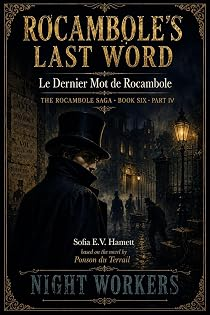

Le Dernier Mot de Rocambole
Book Six · Part IV
by Pierre-Alexis Ponson du Terrail · translated by Sofia E. V. Hamettpar Pierre-Alexis Ponson du Terrail · traduit par Sofia E. V. Hamett
The bookLe livre
Moussami, who no longer has a tongue, explains it in signs: a noise around midnight, a sleeper who could not be woken, a door opening, two men, and a wool blanket thrown over the Indian's head. The saga turns first-person and confessional in its closing movement, and the effect is startling.
Moussami, qui n'a plus de langue, l'explique par signes : un bruit vers minuit, un dormeur qu'on ne peut réveiller, une porte qui s'ouvre, deux hommes, et une couverture de laine jetée sur la tête de l'Indien. La saga passe à la première personne et au ton de la confidence dans son dernier mouvement, et l'effet est saisissant.
From the opening pagesLes premières pages
So what had happened?
Moussami, who no longer had a tongue, explained it to me in signs. Around midnight, thinking he heard a noise, he had come into my room, where I was sleeping deeply. He had tried in vain to wake me, and when the noise went on, he had headed for the door to call the household for help.
But just then the door opened, and two men who came into the room threw something dark and heavy over the Indian's head.
It was a wool blanket, wrapped around his head to keep him from crying out.
Moussami fought hard, but they brought him down.
The blanket blinded him even as it smothered his cries.
Once he was on the floor, one of the two men bound his hands and feet with that skill and dexterity that seems almost supernatural in Indians.
At the same time they gagged him and pulled the blanket away.
Then Moussami could see and hear.
The two men were Indians of the reddish race, and their dress marked them at once as followers of the goddess Kali — Stranglers.
One was young and seemed to be taking orders; the other was old and giving them.
They came to my bed and shook me. But I did not wake.
The young one smiled, full of hatred.
"So this," he said, "is the man who beat Ali-Remjeh?"
"Yes," said the old man.
"What if we strangled him?"
"You know very well that the one who sent us said our heads would answer for his."
"True," the young man sighed, "but it's a shame."
The old man took my hand in his and slid the ring off my finger.
Then he examined the piece closely.
"Yes," he said, "this is it."
They left me to sleep and went back to Moussami.
By then Moussami had recovered his composure entirely, and instead of trying to cry out, which would have gotten him nowhere, he studied the two men closely, so as to be able to recognize them later.
One of them drew a dagger and held it to his throat.
Then he spoke to him in Hindustani.
"We want to question you, and we're going to take off your gag. There's no use screaming — everyone in this house has been bought by the man who sent us, and none of them will come to help you. And it would be pointless to try to wake your master. He was given a narcotic in his last meal, and the effects won't wear off for hours."
The Indian is cautious, the Indian is calm; he knows, once resistance has proven useless, how to feign complete resignation and submit to the will of that god of gods he calls Fate.
Moussami blinked his eyes in a way that meant: "I'm ready to answer you."
So they took off his gag and propped him up against the wall.
He was bound so tightly that it would have been impossible for him to move.
Once the gag was off, the old Hindu said to him:
"You're in the service of that white man?"
"Yes," Moussami answered.
"What's his name?"
"Avatar."
"Do you know where he comes from?"
"No."
"How long have you served him?"
"Eight days."
"You're lying."
"I swear to you," Moussami answered, unmoved, "that I've only been in Calcutta for eight days."
"That may be. But you knew him before."
"No."
"You're lying," the old Hindu repeated.
Moussami replied coolly:
"There's no use telling the truth to someone who doesn't want to hear it."
The old Hindu went on:
"Your master was a friend of Rajah Osmany?"
"I don't know."
"The rajah gave him a ring?"
"I don't know."
"Here's the ring."
"Ah," said Moussami, feigning the greatest astonishment.
"Speak plainly," the interrogator pressed, "if you want to live to be old."
Moussami answered:
"I can't say whether my master has that ring from the rajah, since he never told me so. But you're telling me now, and I believe you."
"That ring," the old Hindu continued, "your master is meant to show to someone."
"To whom?"
And Moussami put on a look of blank stupidity.
"That's exactly what we don't know, and what we mean to find out."
"I can't tell you."
A flash of anger lit the old man's eyes.
"If you knew what awaits you, you'd talk."
"I'd be glad to, but I know nothing."
The old man made an impatient gesture.
Then he turned to his companion.
"Since this man's tongue is good for nothing," he said, "it must be cut out."
Moussami didn't flinch. The young Indian drew from his belt a dagger with a blade as thin and sharp as a razor and said:
"I'm ready."
Moussami tried to break his bonds, and with a violent effort, threw himself backward.
But the two Indians fell on him and pinned him down again.
"Talk," said the old man.
"I know nothing," he answered.
"You won't tell us where in the city the man lives, the one your master is supposed to show that ring to?"
"I don't know it — but even if I did..."
"Well?"
"I wouldn't tell you."
"Then let it be done as I ordered," said the old man.
He put one knee on Moussami's chest. He took his throat in his clenched hands and squeezed.
Half choked, Moussami opened his mouth wide, and in that instant the young Indian thrust his whole hand in and seized his tongue.
Then, with the other hand holding the dagger, he cut it off.
※
From that moment on, Moussami remembered nothing more.
The pain had torn a scream out of him.
Then the bleeding had brought on a fainting fit.
Only my voice had pulled him back from that kind of physical and mental collapse.
I bandaged the poor devil as best I could, tearing up my bedsheets to make lint for the wound.
Then I cried out:
"I have to save Rajah Osmany's child, and his fortune!"
And leaving Moussami, who in any case was in no state to follow me, I rushed out of my room, absolutely determined to run to old Hassan's house, tell him what had happened, and warn him against anyone who might show him the rajah's ring.
But just as I was about to cross the threshold of the house, two English police officers came up to me and seized me by the collar.
One of the two police officers said to me:
"You're the man they call Major Avatar?"
"Yes," I answered.
"Please come with us."
Over the course of my adventurous life, I have noticed that resisting the police, in any country whatsoever, never ends well.
The criminal who submits to arrest without a fight has ten chances out of ten of getting off. The innocent man caught up in the same kind of trouble often wrecks his own case by getting indignant and wasting his breath on protests.
I knew this so well that I simply answered:
"Gentlemen, I'm ready to go with you — only let go of my collar, if you please, I'm an educated man, there's no need to manhandle me."
The excerpt ends here — about 1,200 words of the published edition.L'extrait s'arrête ici — environ 1,200 mots de l’édition parue.
KindlePaperbackBrochéHardcoverReliéContextContexte
Rocambole is the reason French has the word rocambolesque. Ponson du Terrail wrote him across nineteen volumes between 1857 and 1870 — a child of the Paris underworld who becomes a criminal prince, is broken, sent to the galleys, and returns as an avenger. He was the most widely read character of his century and the direct ancestor of every serial anti-hero since, Arsène Lupin included. English readers have never had him whole: a few volumes were translated in the 1860s and then abandoned. This is the first complete English Rocambole.
Rocambole est la raison pour laquelle le français possède le mot rocambolesque. Ponson du Terrail l'a écrit sur dix-neuf volumes entre 1857 et 1870 — enfant des bas-fonds parisiens devenu prince du crime, brisé, envoyé au bagne, puis revenu en justicier. Il fut le personnage le plus lu de son siècle et l'ancêtre direct de tous les anti-héros de feuilleton, Arsène Lupin compris. Le lectorat anglophone ne l'a jamais eu en entier : quelques volumes furent traduits dans les années 1860, puis abandonnés. Voici le premier Rocambole intégral en anglais.
The whole programmeTout le programme